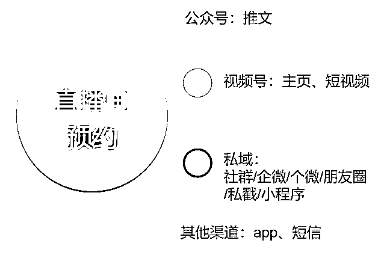

来源：https://jid6vvjfdm.feishu.cn/docx/R9zfdm4Q2oVMS2xDneccJdkInxh
各位生财星友好，我是河林，是一个加入生财3年、第一次发帖的小透明。
简单介绍一下自己，我是河林，98年出生，3年头部视频号达人运营经验，base杭州；
是一名视频号直播运营操盘手，也是一名互联网营销自媒体作者（公众号：河林成长说）。
我从2022年开始，先后在头部母婴新媒体公司、视频号头部女装达人公司，做视频号直播带货运营；
至今为止我自己作为专场项目管理+运营执行+中控跟播，统筹的直播也有接近 300 场了，全品类都做过，其中也做出过多个 100w+GMV的大场。
我平时有输出的习惯，擅长营销案例拆解，长期为零一裂变、鸟哥笔记等互联网营销资讯平台供稿；
写过几篇分析视频号直播的小爆款文章。

2024结束了，我想把这篇文章作为我的年度总结，给大家分享在视频号直播的赛道上，（给公司打工）摸爬滚打 2 年多之后，我的经验、观察、实操打法，也算加入生财2年来给生财的一份贡献。
我会在这篇文章里分享我对以下几个问题的观察：
事先声明
希望对大家有帮助。
视频号的特点，相信大家这一两年也都了解的比较清楚了，我简单挑重点介绍一下。
我自己归纳为3个特点，也是视频号直播带货的主要红利来源：
根据视频号官方在2024微信公开课上披露的数据，以下这4个类目是2023年视频号电商的强势类目，也是我认为2024年、2025年依然适合商家优先入场进场的类目。
服饰家居（占比36%、客单价172元）
食品生鲜（占比21%、客单价160元）
家清日用（占比9%、客单价152元）
个护美妆（占比8%、客单价100元）
而在以上类目之中，围绕中老年用户对变美、长寿、品质生活需求下的非标品，是2023、2024年很多品牌取得成绩的方向，都有代表性的案例，这是目前阶段视频号的品类红利。
除了品类红利之外，视频号的用户红利在于，视频号电商目前的活跃用户，比其他平台都有着更高质量的电商行为，呈现出高粘性、高复购、高客单、低退货的特点。
按照官方的说法：“高潜力的电商消费人群在视频号保持活跃”，视频号电商人群画像的特点：
所以，关于用户质量，可以认为视频号是有着极大规模的高潜力优质电商人群。
官方举的一个非常有代表性的案例是， 2023年在视频号购买车厘子的用户里，有75%的用户都购买的是3J以上等级的车厘子。
京润珍珠品牌方也介绍过：他们品牌在其他平台的直播客单价是600-800元，但是在视频号的客单价能到1000-1200元甚至更高，用户也在要求他们推出更高客单价的商品。
足以说明 视频号用户对产品品质、生活品质的消费追求，给我们的启示也是，如果有能力的话，那么在视频号也要争取成交高客单价。
视频号和其他电商平台相比，最大的特点是什么？
当然就是它背靠微信这个社交平台，天生处在巨大的、高频的社交流量的中心，又联通着整个微信的公域和私域。
视频号根植于微信，它的内容很大程度上依托熟人社交关系传播，具有更强的社交属性与情感价值。
在微信里，私信、私戳、朋友圈、微信群、微信好友分享、看一看、直播广场，各种各样的入口，都有可能见缝插针的帮你推广出你的直播；在微信里，用户的停留时间长，品牌触达用户的成本低、入口多、频次更高。
而熟人社交关系对电商的价值在于，当用户通过有私域属性的社交推荐渠道，而不是平台的推荐、信息流的推送等等重营销的场景，进入你的短视频主页、直播间的时候，这种推荐关系会自带一层社交信任的烙印，更容易沉淀和用户之间的信任，从而带来高转化。

这也是视频号直播现在迎来了达人红利的原因之一，粉丝对流量主的信任感极强，流量主也会尽全力给粉丝回馈，导致用户消费行为存在高活跃、高转化、高客单、低退货的特点。
下面这张图我觉得很形象，它比较了微信和抖音这种这两种平台的去做成交链路的一个区别。
微信它的特点就是它的转化链路可以很长，但是他能够做到一个无孔不入，是各个的空间或者场景都有见缝插针的一个组件，可以去触达我的用户，或者说是提醒我的用户来看我的直播、来看我的视频。
而更长的触达链路、更深的说服，也更容易带来更高的信任转化，从而实现高客单、高复购、高利润。
视频号目前的平台策略呈现出这么几个特点：运营团队风格保守、电商发展节奏慢、算法推荐去中心化、数据榜单隐藏不公开。
这些种种因素，其中最重要的就是去中心化的流量推荐，不公开数据榜单，共同导致视频号的竞争格局并不激烈，新进来的不论是品牌还是达人，能够有一段风平浪静的窗口期、试错期，而不会被迫一上来就刺刀见红，和同行卷生卷死。
我自己和很多做视频号的品牌、厂家交流过，很多品牌都是在抖音拿不到结果，因为抖音的竞争已经到白热化阶段，如果想要在抖音拿到结果，要么成为一个六边形战士有一个强有力的团队，要么就要投入非常高的成本付费投流。
于是被迫做视频号，发现视频号竞争程度没有那么激烈，自己的投入和试错可以看到结果，更重要的是投流成本没那么高、投产比还相对更好，于是就慢慢发展了起来。
那么，了解了平台特点，就到最重要的策略部分：视频号直播带货怎么做？视频号怎么做流量？怎么做转化？和抖音的打法有什么区别？
那么这一部分，我就主要介绍一下视频号做好直播的核心方法论——公私域联动打法。
视频号直播的流量，目前分为三个板块：公域流量、私域流量、付费流量。
在直播数据大屏后台也是这么体现的，想要做好整场直播的数据，就要做好每一部分的流量、成交、转化策略。
视频号直播的公域流量怎么做？
公域流量的推荐算法，官方已经在发布的《视频号商家起量教程》中公开了：
既然官方已经公布了流量密码，每一个视频号玩家都应该把这个流量公式烂熟于心。
视频号带货直播间流量机制的核心逻辑，就是：好内容×好货品×好服务，等于更多的自然流量推荐。
官方归纳的视频号流量机制：核心逻辑依然是做好直播间的人、货、场，在当下时段脱颖而出。
上面我们提到过，视频号整体的流量算法呈现出去中心化的特点，具体也体现在：
在直播大屏数据后台也所体现，
而在实操中具体是如何体现的呢，规律可以大致总结为：直播间成交的波峰，大概率能直接带来下一个流量推荐周期内，直播间流量推荐的波峰。
而根据这个推流逻辑，在直播中如果能够如果做好这3个数据指标，直播间大概率就能得到更稳定的推流。
这就是做好公域流量的核心思路：
私域流量对直播的作用，体现在两个方面：
而我们要做的，就是用尽一切自己能够调动的私域入口，想办法触达更多用户，为直播间带来更多曝光，提升直播预约数。

比如：
而视频号的直播预约的作用，要比其他任何平台都更加重要。
一场充分预热的直播间，私域预约带来的直播产出占比是非常高的，因为私域的用户和你本身有信任关系，用户质量更高，下单更果断、互动更热情、售后率更低，能给品牌带来更高的利润，都是宝贵的VIP用户。
而私域流量的承接，也会带来更多的公域流量推荐，在视频号的公私域流量推荐机制下，直播预约=商品种草=开播急速流=密集成交=撬动公域流量推荐。
直播前充分种草，直播中全力承接、高效成交，直播后做好售后服务、沉淀好用户的信任资产，才是在视频号做私域和直播的长久之道。
至于付费流量，视频号直播可以通过两种方式付费投流，一是微信豆的内容加热，二是微信广告的adq投放。
我总结了两种工具的大致区别：
总结一下，两种工具各有优劣，各自有适合的使用场景，对大部分商家而言，用微信豆内容加热更顺手、更简单，而且也足以发挥作用；
不管工具如何，付费投放的核心逻辑永远不变，优质内容素材、有竞争力的爆品、合理的出价，才更有更好的付费投放效果。
视频号的公私域联动打法总结：
要储备好私域流量，导入私域流量到直播间，通过做好「人货场」模型优化，在直播间制造持续成交转化，来从公域获取持续稳定的公域推流，并用好付费投流工具加以放大。
第三部分是这一部分策略的核心，那么下一部分我会以一场直播的实操具体过程为例，为大家介绍，一个优秀的操盘手或者一个运营型主播，应该具备怎样的素质；以及，作为一个视频号团队的管理者，应该筛选、储备怎样的人才。
主要是我自己实操以来的真实方法，受篇幅所限不一定全面，但绝对落地、实操，也欢迎志同道合的小伙伴补充、丰富。
用到的截图一部分为我自己的实操案例，一部分为其他案例的截图，用来做参考说明。
从货盘中选出最主推的爆款，建议不超过5个，以这5个款为核心去做种草的内容，来给自己的直播拉直播预约。
而视频号直播的爆款一般有这么几个前提条件，满足得越多，越容易爆。
在各个类目应该都有这样的爆品，大家根据自己的情况选择就好，最好参考别的渠道的数据验证，或者别的
不管什么类目做直播，爆款的押注都是重中之重，因为爆款决定了后面的一系列种草预热、组货盘、过款转款等一系列动作，爆款挑得不对，后面的动作都衔接不上。
预先押注好爆款之后，再围绕爆款组整个货盘，是我比较推荐的顺序。
具体怎么排，就需要依照货盘来定了，在这里说几点经验和思路：
拍摄好视频内容之后，建议在直播1-2天前发布，给直播预约视频自然跑量增长的时间，这也意味着一场直播档期一定下来之后，就要从视频发布日期倒推，着手准备视频的拍摄、剪辑、发布了。
至于预约视频对直播的作用：
视频发布期间，记得在后台直播预约上选择置顶预约，这样用户在刷到你的视频的时候，才有最大概率看得到直播预约的按钮，否则有大概率是不现实直播预约的。

公域种草除了发视频，还可以发公众号，在公众号里直接插入直播预约的按钮，公众号的预约效果和视频预约的原理是一样的。
与视频相比，公众号的另一个好处在于，除了直接引导预约直播、引流到直播间以外；还可以引导入群到私域，把意向高的用户筛选出来，引导到直播专属群做二次触达，效果更精准。
公域的种草主要靠视频，私域种草靠图文。。
公域种草是做流量、做广度，而私域种草就是要做深度、做垂直。
与视频内容相比，私域内容的优势在于可以规避公域不让说的极限词、敏感词、利益点等等；图文内容也更有利于展示丰富的素材、细节、实际使用效果、品牌背书素材、直播机制的提前露出、营销利益点活动等等；这也是私域种草的重要性。
所以公域不能说、不敢说的卖点、利益点，一定要在私域大胆说、反复说（不要挑战平台允许的边界）。
例如：
可以参考现在一些头部的、成熟的达人账号在做的私域预约的形式——
种草期间，一定要经常关注自己的直播预约效果，每一个账号的直播数据稳定之后，品类稳定的情况下，直播产出基本和直播预约数成正比，只不过不同账号，比例有差异。
所以基本从直播预约总数就能预估这一场直播的产出，这也意味着，你在直播预约上做的努力，基本都不会白费，都会体现到你的直播结果上。
押注好主推爆款、组好货盘之后，就可以根据整场的直播款，预估坑产，来制定一场直播的目标，拆解一场直播的目标达成概率。
可以用2种方式预估直播目标，一种是坑产预估，一种是预约数。
因为直播预约数直接体现前期种草的效果，直接关系着整场直播的流量规模；所以一般而言数据稳定的账号，都可以根据自己整场直播的既往经验，预估直播的产出规模。
货盘结构敲定后，可以按照以下格式预估：
| 商品 | 直播价 | 预估订单量 | 预估GMV |
|---|---|---|---|
| 主推品1 | 999 | 100 | 99900 |
| 主推品2 | 599 | 150 | 89850 |
| 次推品1 | 399 | 80 | 31920 |
| 次推品2 | 199 | 70 | 13930 |
| 其他 | …… | …… | …… |
| 总计 | 300000 | ||
| 直播目标 | 500000 | ||
| 目标与坑产预估差值 | 200000 |
预估坑产后，再根据自己的预估坑产和直播目标间的差值，调整直播策略，比如：
——增加品数：我是不是该多塞几个品，增加我的坑位数，来提高我的整体产出，达到目标？
——增加单品产出：是不是可以把其中几个爆款的成交单量拉高，围绕这几个爆款，拉高整体GMV？
——拉时长：增加直播时长，往下延播2小时？
——提预算：增加付费投放预算，把缺的产出补一补？
等等……
预估目标，主要是要对整场产出有一个大概预期，再根据测算出来的结果，针对性地调整直播策略。
一场直播的成本预估，除了人力成本、营销费用以外，最重要的就是投放预算。
付费投放的底线肯定是要保证不亏、有利可图，那么就要确保投放所带来的实际产出的实际利润大于等于我的投放成本，找到一个目标ROI，只要投放产出的ROI在这个值以上，我就是不亏的。
算ROI的方法大家肯定也都会算，核心是要预估自己的品类的实际签收率、毛利率。
这部分大家肯定也都懂得，就简单举例说明一下：
在我直播的实际签收是80%、毛利率是30%的情况下，我的投放ROI是1，就意味着我每花100元投放，带来的gmv是100元，那我也只有24元的利润，这其中还没有包括我的投放成本本身。
那么我需要的就是，让我的ROI放大，直到一个我不亏的数值，在这基础上，ROI越大越好、我越投越赚。
比如当我的ROI到了5之后，我每投100元，就有120元的毛利，哪怕减去100元的投放成本本身，我还净赚20，那这种情况下，我就可以持续加投。
当我在直播前拆解出这个数值后，就可以告诉投手，我们的ROI目标是多少，让投手根据直播目标去建目标投放了。
直播中看每个品的转化数据：

转化数据持续增加，就表明这个品在增长的趋势，依然还可以去做，这时候是最能够做后台的成交密度的时段，成交密度的峰值做上去，那么下一个周期就有更高的自然流量推荐。
如果转化数据保持不变或者下降，就可以考虑转款过款，因为一旦直播间成交密度下滑，流量也会随之下滑，一旦大幅下滑，后续很难逆势增长。
就像上一部分介绍的，视频号的直播流量由三部分构成，公域流量、私域流量、付费流量；
而要想要确保直播间能长时间有源源不断的流量涌入，我们就要对不同类型的流量，制定不同的引入策略，让直播间保持稳定的在线；同时，流量引入后，也要做好相应地承接。
公域流量主要对应数据后台的直播推荐流量，它会随着我们直播间的成交数据、互动情况、停留而正向波动。
想要引入公域流量，就要做好爆品的转化、互动。
所以针对爆品，一定要乘胜追击，通过扣互动、晒单抽奖、抽免单等动作，吊足胃口，把用户互动欲望带起来；同时配合好直播间的憋单、卡单、踢单等动作，把转化节奏拉上去。
这时候，公域流量一旦拉上去，我们在直播间的转化空间就更大，可以再来一轮转化，促进成交。
私域流量引入核心就是2点：
-在成交爆品时，拉入经历过私域种草的核心粉丝，“集中优势兵力”，促进爆品成交；
-在直播间流量下滑时，靠私域的粉丝填补流量，稳定直播间在线；
而促进爆品成交是更重要的目的，因为私域的粉丝是信任感最强、也经历了最深度种草的群里，购买率更高，这就要求无论是前期，还是直播过程中，对爆品的种草都要持续进行、提前预告。
比如种草阶段，要以爆品为核心去种——
开播后也要提前预告今天爆品有哪些、什么时候会上，马上要上什么品的时候，就要提前抛出种草素材，预告上品时间……
付费流量的策略，主要就是需要和投手保持密切沟通，用爆款承接住付费流量，带来成交转化。
直播间确定好主推品的上播时间后，就需要和投手配合，让投手在需要的时间段内，拉流量进到直播间内。
而进入爆款主推的阶段的时候，运营就需要时刻关注后台的投放流量趋势、投手就需要在后台随时看投放产出进展，优秀的投手也会给直播间节奏提供一些建议反馈，直播间运营和主播也要有能力接住付费流量。
当然，在直播间的每时每刻，其实都是三种流量融合混杂的情况，没办法严格区分，所以流量的引入和承接，只是在做了针对性动作的关键节点做调整。
整场直播中，以爆品为核心、保持稳健的转化节奏才是最稳妥的策略，在非必要的情况下，不需要过多微操，所以，运营和主播对直播间流量的感知就非常重要。
直播后要做的就是数据复盘，一般会围绕几个重点维度展开：
分析完各个维度的数据，再针对遇到的问题提出优化的策略和方向，对后续的直播起到帮助，这就是复盘的意义。
建议新手、个体户入局视频号，一步一步根据自己的能力选择合适的打法。
比如最开始可以试试搬运、混剪视频挂车；然后试试真人出镜口播；再接下来视频带货+真人开播带货相结合，或者直接开播，通过直播暴力起号，最后，如果能力足够，可以考虑要不要持续经营自己的IP，把自己培养成一个达人，进入视频号直播这个赛道。
视频号的电商打法还有很多，探索适合自己的打法，在这个过程中逐级提升自己的赚钱能力，才是更重要的。
而几乎每一种打法都可以在生财里找到对应的经验贴，所以大家有卡点、有疑问的时候，就用好生财，会很有帮助。
我个人的经验是，视频号达播，选品是王道，解决了选品就解决了80%的问题。
掌握了选品、优质供应链，也就掌握了主动权，而塑品的方法、拉流量和互动的技巧，重要性都是排在选品之后的，所以建议无论处在哪个阶段，都把更多的精力放在琢磨和研究选品，寻找好的货源上面。
如果你是一个商家或者说品牌，你要不要入局视频号直播，建议考虑这几个因素。
我的品类和视频号的主要受众是否匹配？我的品类在视频号是否准入？是否能够合规上架销售？
是否有同行在视频号上做和我同一品类的商品？如果他们能做，还做得不错，那我就可以做。
我有没有私域资源？比如公众号、社群、微信好友？
我我的团队是否有能力持续产出短视频？
我的团队直播能力如何？我们是否有别的平台的直播经验？我的主播带货能力好不好？
我的品类的利润、我的成本预算，是否能支撑我的投流费用？
以上几个问题想清楚之后，如果符合的条件多、有优势、有同行拿到了好的结果，那么可以先入场，试试看；如果不是，那可能就要重新考虑一下视频号这个平台是否适合做了。
以上就是我在生财的这一篇分享啦，希望对星友们有帮助，请多指教；
2025开年，一起红红火火、快乐搞钱！
视频号运营相关好的项目，以及其他任何搞钱心得，欢迎交流，也希望生财的前辈、大佬们多多指导、不吝赐教，